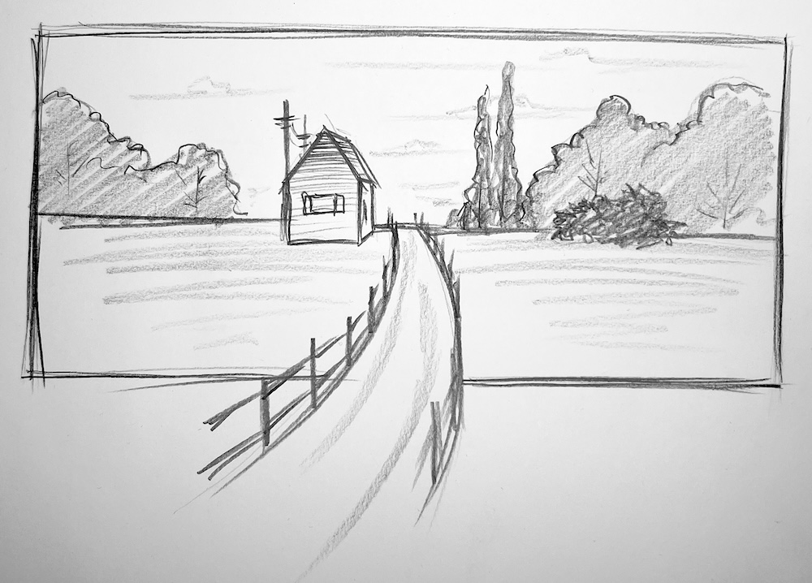
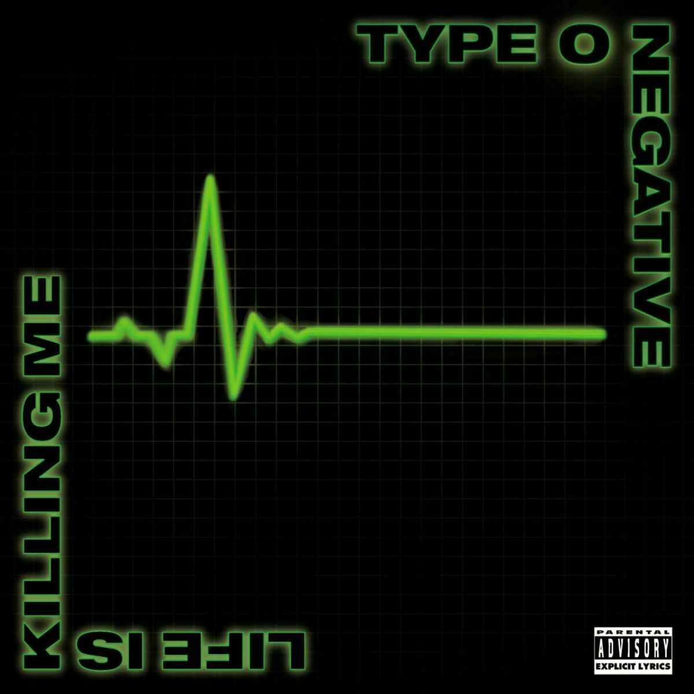
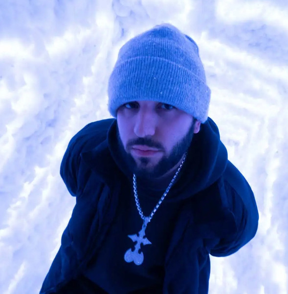
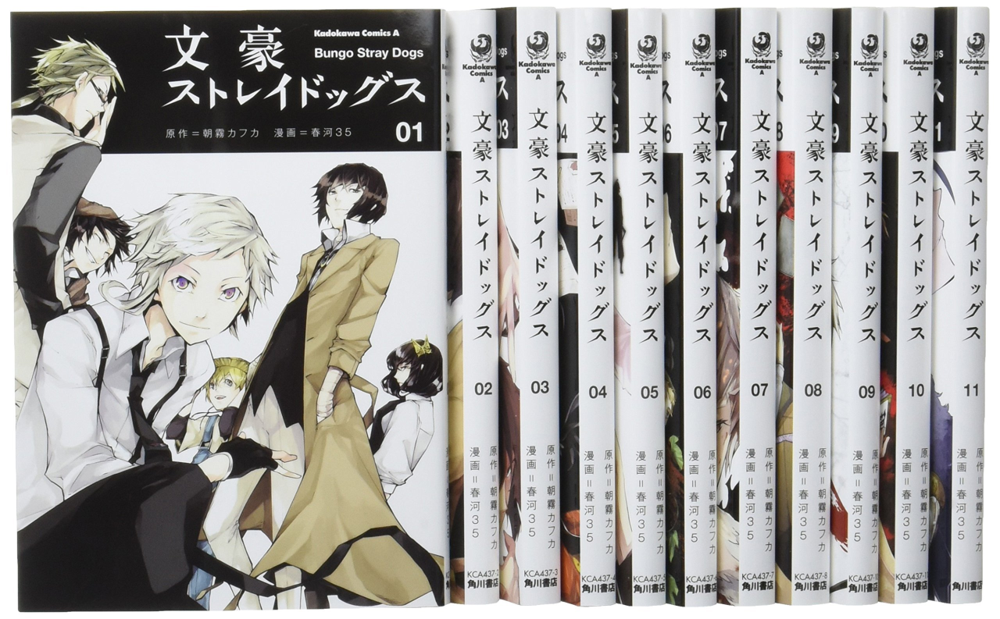
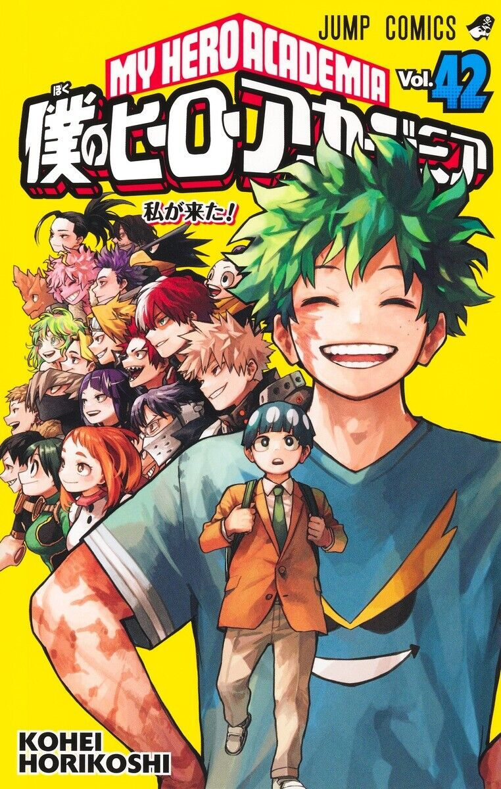

Drawing

I love drawing and have been drawing for several years. I mostly teach myself, but I did attend classes for about a year. Then she left due to lack of time. Currently, I draw at home, but in the future, I might combine it with my work. I mostly draw in a notebook, most often simple sketches with a pencil, but when I have more time, I switch to canvas and paints.
The most important thing in this business is practice, and the more you draw, the better you get. There are many drawing styles, and some people use several of them, while others use only one. I still have a lot to learn, because there are many themes and rules in drawing.
Yes, there are certain rules for this type of activity if you want to draw. But it mainly depends on what you're drawing. For example, if someone is doing realistic drawing (realistic drawing - the ability to depict objects and scenes as they appear in real life), they need knowledge of perspective (the art of representing three-dimensional space on a plane according to the apparent change in size, outline, and clarity of objects, determined by their distance from the point of observation), light direction, shape and volume, angles, and also the ability to work with color and shading, etc.
When drawing portraits/people, which is the most difficult aspect of painting, you need a knowledge of anatomy. This is general knowledge that you should know to ensure the technique is applied correctly and the work looks natural and high-quality. Yes, there are people who draw without this knowledge, but most of the time, such drawings turn out much worse and are unaesthetic to the eye.
Music and my favourite artists

Type O Negative [ˌtaɪp oʊ ˈnɛgətɪv] was an American rock and metal band. It was founded in 1989 by Brooklyn, New York, musicians Peter Steele (real name Peter Ratajczyk, * January 4, 1962 – † April 14, 2010), Sal Abruscato (* July 18, 1970), Kenny Hickey (* May 22, 1966), and Josh Silver (* November 14, 1962). The band has sometimes been classified as doom metal or, due to their biggest hit, as gothic metal. The band's name is the English term for blood type zero-negative, but is also an allusion to the typically depressive mood in the band's music and lyrics.

Odetari is a Houston-based producer, rapper, and songwriter specializing in frenetic, all-CAPITALS EDM rooted in glitchy trap, aggressive club beats, and the dramatic bombast of video games.

The Arctic Monkeys are a four-piece British alternative rock band with influences from post-punk and garage rock. They formed in Sheffield, England, in 2002 and released their debut album in 2006, which reached number one in the UK charts. Further albums by the group were released in 2007, 2009, 2011, 2013, and 2018, all of which also reached the top spot in the UK. The band's latest album is The Car, released on October 21, 2022.
Reading

Bungou Stray Dogs, also abbreviated as B-S-D, is a Japanese manga series by Kafka Asagiri with illustrations by Sango Harukawa, serialized in Kadokawa Shoten's seinen manga magazine "Young Ace" since 2012. The anime is about people with superpowers and their adventures, featuring detectives and mafiosos as the main characters. The manga characters are based on real-life authors.

My Hero Academia (also known as Boku no Hero Academia) is a Japanese manga series written and illustrated by Kohei Horikoshi. It was serialized in Shueisha's Weekly Shonen Jump magazine from July 2014 to August 2024, and its chapters were collected into 42 tankobon volumes. This anime also features characters with superpowers, but in this world, there are heroes and villains.